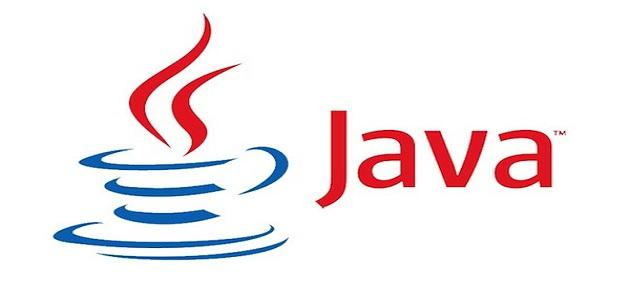

programming language java page
links:
Introduction
Java system (or English: Java) is a computer programming language, a language that enables programmers to write computer instructions using commands in the English language to write with numerical symbols, which use Java as a high-level language, because people can read and write it easily, it is like the language English has a set of rules that define how to write instructions, and after the writing process, the instructions are translated into numerical codes that the computer understands, and works to implement them

The date the Java language was created
Sun Microsystems arose a Java system, where James Gosling led a team of researchers to produce a new language for the electronic devices used, and in 1991 work began on language preparation, and after a long time the team's attention turned to Focus on the World Wide Web, and in 1995 Java was first launched, and the Java language was able to demonstrate interactivity and multimedia playback with the web
In the late nineties, the Java language transferred multimedia to the Internet, and then began to grow outside the Internet, including cellular devices, different computers, and for many Java users, the company developed different types of Java languages, so that these types serve purposes Different, including: [2] Java "SE" for home computers. Java "ME" for devices with embedded or embedded systems. Java "EE" for Internet servers and supercomputers. Note: In 2010 Oracle Corporation took over the management of Java
How the Java language works
The way the Java language works differs from other programming languages, where the code is translated into specific instructions for the computer in other languages, and it is worth noting that the Java translator converts the code to "Bittecode", then it is interpreted by the Java program Runtime Environment / JRE), or the Java virtual machine, in which the JRE program works as a virtual computer, and it interprets the bitcodes, and translates it to the computer. It is worth noting here that you can write code in the Java language for several programs, and this It means writing once, and operating on any device, as a translation process Orders take several hours to load a large number of files
Java language features
The Java language is used because it contains the following features: Ease of use: The basics of Java work originate from the programming language called (++ C), which is characterized by the complexity of the syntax and insufficiency of some Java requirements, so the Java design is built to improve the ++ language C), providing powerful and easy to use programming. Reliability: Java detects potential errors in the programming system by collecting manipulative data. Security: Java is one of the most secure programming languages. Independence: The Java language is independent of its work, as it is not related to the operating system, computers, and the applicable device